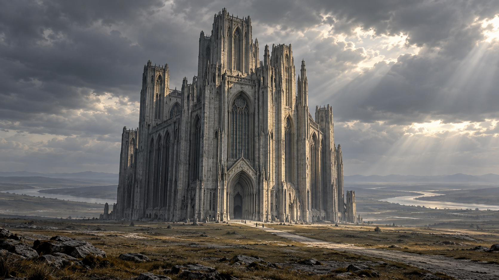
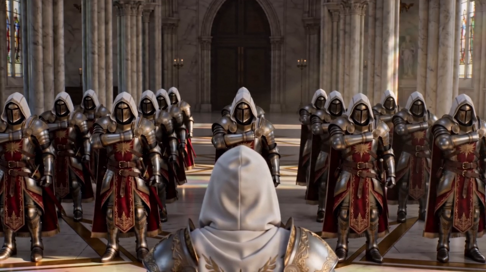
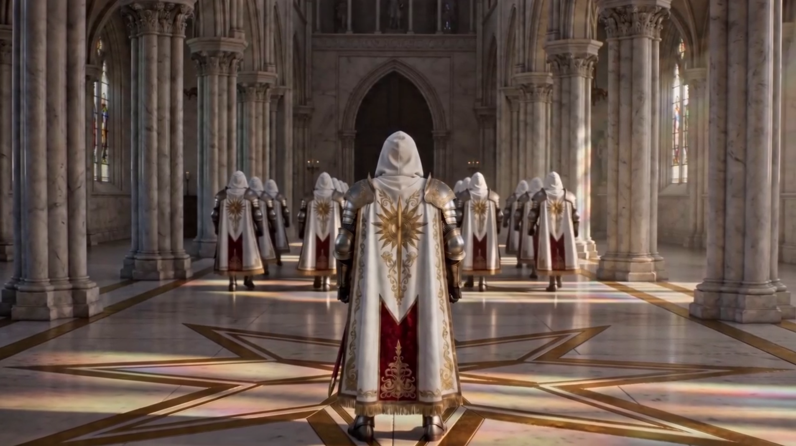
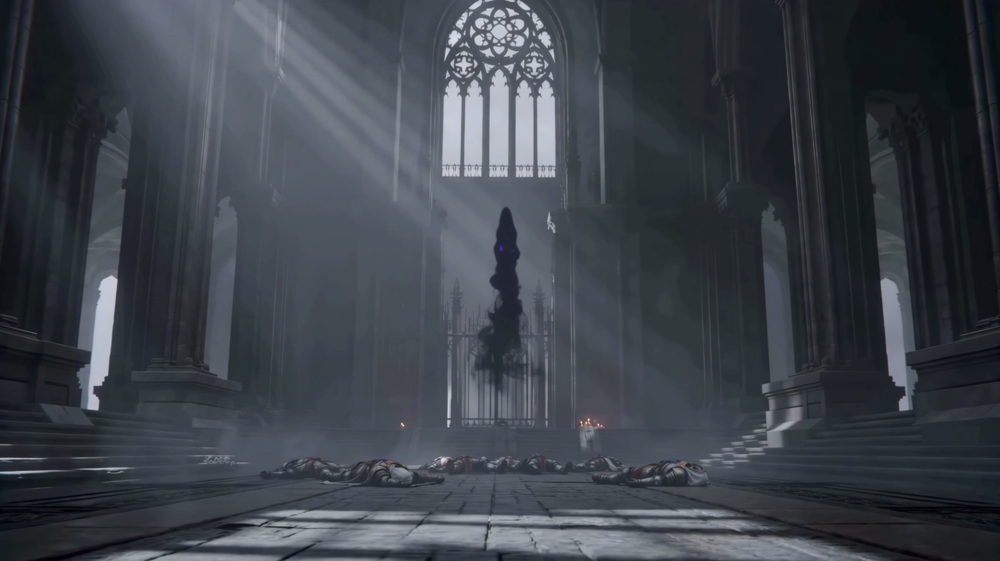

Локация / Том I
Святилище
Монументальное сооружение, связанное с Орденом паладинов.
Архивная запись · Том I
Краткое досье
- Тип
- Святилище
- Связано с
- Орденом паладинов
- Окружение
- Открытая равнина; река на расстоянии
- Облик
- Отдельно стоящее монументальное сооружение
I / Место
Святилище
Святилище — одно огромное сооружение, стоящее отдельно посреди открытой равнины. Его высокий силуэт заметен в открытом пространстве; вокруг нет города или внешнего оборонительного кольца.
Это место связано с Орденом паладинов. Открытое досье посвящено самому Святилищу, его облику и окружению.
II / Орден
Паладины
Со Святилищем связан Орден паладинов — самостоятельное религиозно-военное братство. Его члены следуют собственной вере и кодексу; Орден не является обычной частью королевской армии.
Подробнее о братстве, его устройстве и традициях рассказывает отдельное досье Ордена паладинов.

III / Пространство
Внутри Святилища
Внутренний образ Святилища строится на масштабе и высоте: массивные колонны, большие стрельчатые окна и просторные залы подчёркивают монументальность здания.
Иллюстрация передаёт атмосферу места; отдельные декоративные детали не следует считать установленными сведениями о его устройстве.

IV / Архитектура и окружение
Камень и равнина
Святилище стоит особняком на широкой равнине. Поблизости нет поселения, отдельных построек или оборонительного периметра. На некотором расстоянии проходит река — не ров и не часть укреплений.
Высокая вертикальная архитектура из светлого и серого камня противопоставлена открытому ландшафту. Само здание доминирует над окружающим пространством.
V / Образ места
Тишина зала
Холодный свет и огромная высота зала создают ощущение строгого, значимого пространства. Даже в полумраке архитектура Святилища остаётся главным элементом его образа.
